library(rpart)
rpart.control()$minsplit
[1] 20
$minbucket
[1] 7
$cp
[1] 0.01
$maxcompete
[1] 4
$maxsurrogate
[1] 5
$usesurrogate
[1] 2
$surrogatestyle
[1] 0
$maxdepth
[1] 30
$xval
[1] 10A good place to start is to ask the question, “what is machine learning?” The short version is that machine learning, or ML, is a subset of statistical learning that focuses on prediction rather than inference.
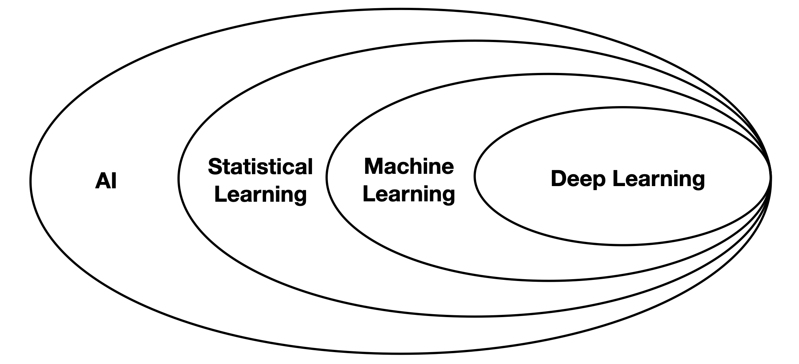
The longer version is that ML is the idea of constructing a data-driven algorithm (that is then run by a machine) that learns a mapping between the predictor and response variables. This means that we suppose no parametric form for this mapping a priori; for instance, linear regression would not be considered an ML algorithm since we can write down the linear equation ahead of time, and all we would use a computer for is to estimate the model coefficients.
In a typical analysis that utilizes ML models, one might utilize the following standard algorithms:
In addition, depending on context, one might learn a Naive Bayes model (but, as we’ll argue, the NB model is not actually an ML model) or a \(K\)-nearest neighbor model (which isn’t really an ML model, but it does utilize a data-driven algorithm, putting it into a murky realm being classical and ML models).
Those using ML models for the first time might say “there are too many choices here…which is the best model to use”? There is no one answer to this question, because the performance of different algorithms is predicated on how predictor data are distributed, and assuming we have more than two predictor variables, we cannot visualize the joint distribution in the data’s native space. For illustration, let’s assume a situation in which we can visualize how the predictor data are distributed:

In this picture, there are two continuous predictor variables, defined along the \(x\) and \(y\) axes, and the response variable is binary: data belong to the “x” class, or the “o” class. A model that features linear boundaries or that segments the predictor-variable plane into rectangles will generate better class predictions given the data to the left, while a model that features circular boundaries will do better given the data to the right. So in the end: we should utilize all the (appropriate!) algorithms at our disposal and retain the one that best generalizes to test data (even if that one ends up being a non-ML model like linear regression…because it can be the case that the association between the predictor and response variables is truly linear).
The reader may wonder about deep learning. While it is certainly possible that one may be approaching modeling for the first time and be in a situation where a deep learning model may be an appropriate one, it will generally be the case that learning such a model would be overkill. Do not just take it from us, however; as James et al. (2021) states:
“When faced with new data modeling and prediction problems, it’s tempting to always go for the trendy new methods…However, if we can produce models with the simpler tools that perform as well, they are likely to be easier to fit and understand, and potentially less fragile than the more complex approaches. Whenever possible, it makes sense to try the simpler models as well, and then make a choice based on the performance/complexity tradeoff.
Typically we expect deep learning to be an attractive choice when the sample size of the training set is extremely large, and when interpretability of the model is not a high priority.”
Note the phrase “extremely large.” Empirically, that would mean having sample sizes in, perhaps, the hundreds of thousands, if not millions (or even billions). For smaller datasets, taking the time to tune a deep learning model would be a waste: one could attain just as good a modeling performance using, e.g., random forest, in far less time.
The decision tree model, also known as a classification and regression tree (CART) model, is one that segments a predictor space into disjoint \(p\)-dimensional hyper-rectangles, where \(p\) is the number of predictor variables. To show how such a model is learned, let’s assume, in a similar manner as above, that we are given a dataset with two predictor variables (arrayed along each axis), and a quantitative response:
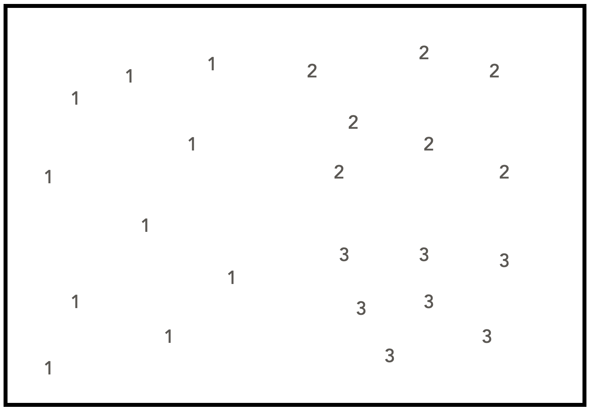
Here, each response value is either 1, 2, or 3. We start by predicting that all the response values are the average of the observed values; here, \(\hat{Y} = \bar{Y} = 45/24 = 1.875\), and the residual sum of squares is \[ RSS = \sum_{i=1}^{45} (\hat{Y}_i-Y_i)^2 = 16.625 \,. \]
Our next step is to try to split the predictor space in two. We try out a variety of splitting points along each axis, to find the one where the sum of the RSS values on either side of the split attains a minimum value. For instance, let’s assume that we propose the following split:
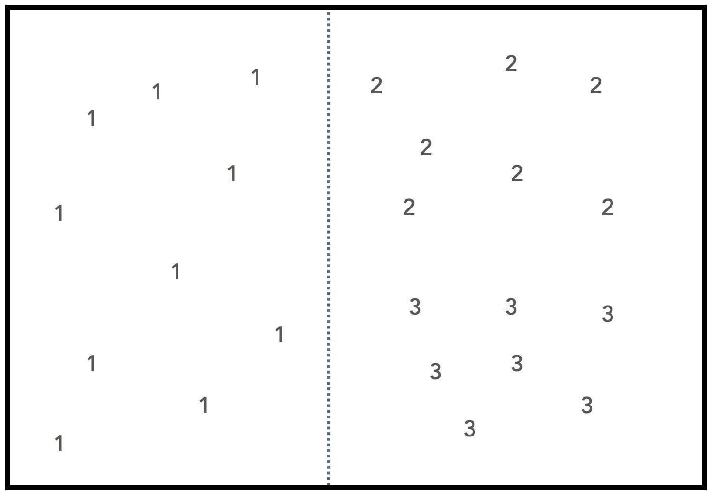
After this split is made, we average the observed response values on either side: \(\hat{Y}_{\rm left} = 1\) and \(\hat{Y}_{\rm right} = 2.5\). When we compute the total RSS value, we find that it is 3.5. (And it turns out the split we are proposing is the one that yields the smallest RSS value.) The change in RSS from 16.625 to 3.5 is sufficient for us to accept the proposed split.
We then repeat the process of attempting to split the space, but now separately within each of the two sub-regions. For the left sub-region, no more splitting can be done: the RSS is already zero. However, on the right, we can make one more split…
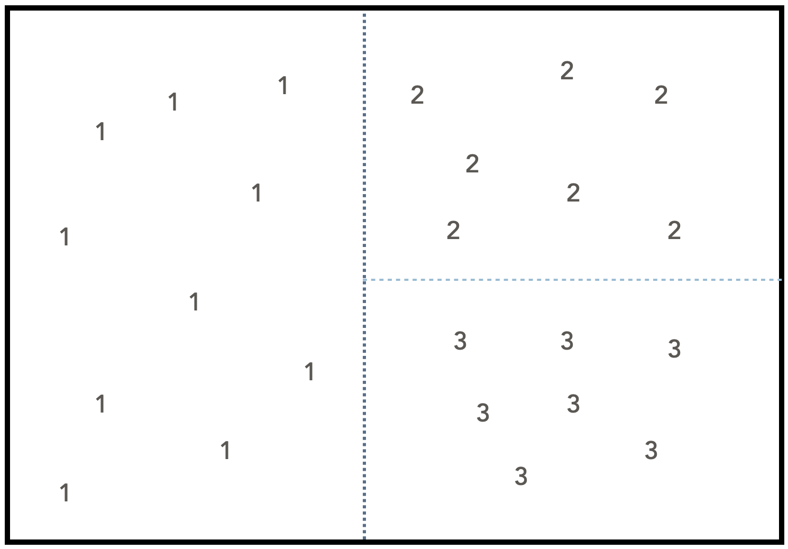
…and at this point we are done, since the total RSS has been reduced to zero. We can display our result in the form of a tree:

If the 1’s, 2’s, and 3’s in the figure above represent classes instead of actual numbers, then the algorithm would proceed identically, except that instead of the residual sum of squares we would utilize the Gini index, \[ G = \sum_{m=1}^M \sum_{k=1}^K \hat{p}_{mk} (1 - \hat{p}_{mk}) \,, \] as our fit quality metric. Here, \(M\) is the number of nodes, \(K\) is the overall number of response-variable classes, and \(\hat{p}_{mk}\) is the proportion of data in node \(m\) that belongs to class \(k\). If all the data in a single node belong to a single class, the contribution of that node to the overall Gini index value is zero.
We should point out here that the decision tree algorithm is a greedy algorithm, one that makes what we will call “locally optimal” choices rather than “globally optimal” choices. Since this model utilizes top-down recursive binary splitting, the final split structure might not be the one that has, overall, the smallest possible RSS or Gini value.
Another thing to keep in mind regarding trees is that overfitting can be an issue: a tree in theory could place a hyper-rectangle around each datum! Such a model would be be highly flexible (with training set mean-squared error or misclassification equal to zero!), but it would not generalize well. To help prevent overfitting, decision tree algorithms come with control parameters that dictate the conditions under which they accept proposed splits. For instance, the rpart package features the following control parameters:
library(rpart)
rpart.control()$minsplit
[1] 20
$minbucket
[1] 7
$cp
[1] 0.01
$maxcompete
[1] 4
$maxsurrogate
[1] 5
$usesurrogate
[1] 2
$surrogatestyle
[1] 0
$maxdepth
[1] 30
$xval
[1] 10One can learn what each value represents by typing ?rpart.control in the R console. Generally, the most important parameters to keep in mind are
minsplit (default 20): there must be minsplit data in a node in order for further splitting to be consideredminbucket (default 7, or 1/3 of the minsplit value): there must be at least this many data in any terminal node…this, e.g., prevents us from having terminal nodes with one datumcp (default 0.01): this is the minimum decrease in the so-called “complexity parameter” that must be achieved for a proposed split to actually be carried outmaxdepth (default 30): the maximum depth of the treeBecause, e.g., minsplit is not defined as a proportion of the sample size, it is the case that for larger and larger samples, overfitting will become more and more of an issue. (Alternatively, for small samples, we can potentially underfit a tree, but that’s not a typical analysis concern.) To mitigate overfitting, we would apply cost complexity (or weakest link) pruning. The idea is simple (and will be demonstrated below): each sub-tree of the original tree has a complexity parameter value (which in rpart is effectively an estimate of the test-set mean-squared error, as we will see below) and an associated estimate of the standard error. The set of sub-trees that have complexity parameter values within one standard error of the original tree are considered essentially equivalent to the original tree; in pruning we identify the smallest sub-tree of that set, and (in theory) adopt it as our final tree model. However, we say “in theory” because while one would think the pruned tree would have a test-set mean-squared error on par with the original tree, it can be the case that pruning can lead to small or even substantial increases in MSE values. A small increase might be tolerable, because one might prefer to tell the story of the data with a simpler model. However, a substantial increase would lead us to reject the pruned tree in favor of the original tree (or, perhaps, to explore playing with the control parameters to see if a better tree\(-\)one that is small and has a small test-set MSE\(-\)can be defined).
In the end, why should one learn a regression or classification tree model?
But why might one not want to adopt such a model, even after learning it?
In this example, we load data for \(n = 1000\) stars, including their locations on the sky, their brightness at a number of wavelengths, and their surface temperatures. In all, there are 10 predictor variables, with surface temperature being the response variable.
Below we load the rpart package and use the rpart() function to build a regression tree. We utilize a 70-30 training-testing split.
rp.out <- rpart(Teff~., data=df.train)
rp.pred <- predict(rp.out, newdata=df.test)
round(sqrt(mean((rp.pred-df.test$Teff)^2)), 3)[1] 621.705We find that the root mean-squared error for the test set is 622, meaning that a typical model residual is 622 degrees Kelvin. This is, on the face of it, not too shabby, given that the mean surface temperature in our sample is 5530 degrees Kelvin. However, this value is substantially higher than that for multiple linear regression, for which the RMSE was 467.
Can we better quantify the quality of a decision tree model, using rpart()’s own output, and without regard to multiple linear regression? We can, using the printcp() function.
printcp(rp.out)
Regression tree:
rpart(formula = Teff ~ ., data = df.train)
Variables actually used in tree construction:
[1] b Gal.B Parallax PM.Dec r
Root node error: 412954444/700 = 589935
n= 700
CP nsplit rel error xerror xstd
1 0.044567 0 1.00000 1.00389 0.062040
2 0.044198 6 0.72636 0.92172 0.061286
3 0.026995 7 0.68216 0.80731 0.059471
4 0.023841 10 0.60117 0.76343 0.058471
5 0.021735 11 0.57733 0.76078 0.058408
6 0.018809 12 0.55560 0.75397 0.057997
7 0.016346 13 0.53679 0.76957 0.063301
8 0.014595 14 0.52044 0.74171 0.060194
9 0.014505 15 0.50585 0.73768 0.059799
10 0.010680 16 0.49134 0.72748 0.061956
11 0.010282 17 0.48066 0.72580 0.063314
12 0.010000 18 0.47038 0.72468 0.063181If we examine the row associated with the final split, we find that the rel error is 0.47, which indicates that an \(R^2\) estimate is 1 \(-\) 0.47 = 0.53. (The column xerror is what is called an “out of bag” error estimate, resulting from performing 10-fold cross-validation on the training data. If we take the final value of xerror, multiply it against the Root node error, and take the square root, we get a figure on par with the test-set RMSE output above. Because we have split the data, however, we can ignore xerror as a model assessment metric, and concentrate on the test-set RMSE. But, as we will see below, xerror does play an important role in complexity-cost pruning. So we are not done with this metric yet…)
We can attempt to infer the importance of the different predictor variables by plotting the learned tree.
library(rpart.plot)
rpart.plot(rp.out)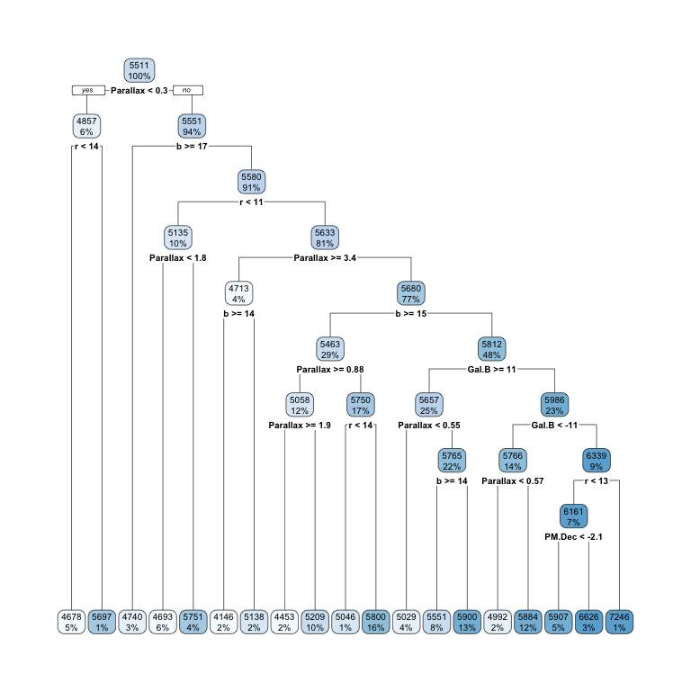
An examination of this tree indicates that Parallax (a metric indicating a star’s distance from the Earth), r (a star’s brightness at red wavelengths), and b (a star’s brightness at blue wavelengths) are the primary drivers for predicting stellar temperature, since all the splits towards the top of the tree are made along the axes defined by these three variables. This is somewhat in conflict with our multiple linear regression model; for that model, the lowest \(p\)-values were those associated with r, Gal.B, Dec, and g…and only then, Parallax. (All of these variables appear in the best model as determined via best-subset selection with BIC as the information criterion.) The fact that b is not present in this list, at least, can be explained by the observed multicollinearity between r, g, and b.
In a regression tree model, prediction is done by sending each test-set datum “down” the displayed tree and seeing where it ends up: the top number shown for each terminal node indicates the predicted response value for that datum. (The displayed percentage indicates the proportion of the training data that ended up in the node.)
In any analysis, we should determine whether pruning is in order. We can do by plotting the observed xerror values sequentially, from the first split to the very last:
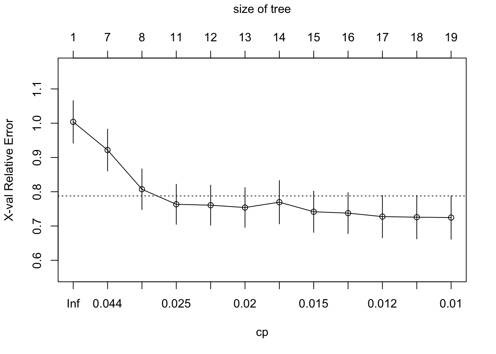
From the plotcp() documentation: “[a] good choice of cp for pruning is often the leftmost value for which the mean lies below the horizontal line.” Here, that leftmost value corresponds to 11 nodes (as opposed to the original 19), or nsplit equals 10 in the table output above. For this nsplit value, cp equals 0.023841. To prune the tree, we take the data structure output by rpart() and pass it into the prune() function, along with our adopted value of cp.
rp.out2 <- prune(rp.out, cp=0.023841)
rp.pred2 <- predict(rp.out2, newdata=df.test)
round(sqrt(mean((rp.pred2-df.test$Teff)^2)), 3)[1] 672.84Here, pruning has led to what we would view as a substantial increase in the test-set root MSE, from 622 to 673, with the estimated \(R^2\) value falling to 0.4. There are no heuristics, per se, for determining what is a “substantial increase,” but here we would view the original tree as the better choice.
Given our regression tree model, we can display the diagnostic plot:
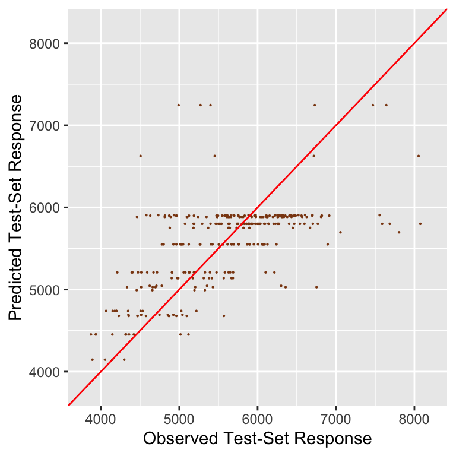
The “striping” that is evident in this plot is “a feature and not a bug”; recall that the predictions for each datum that ends up in a particular terminal node are the same, and hence each horizontal stripe represents a separate node. We see that the model is generally a good one (smaller observed values are generally associated with smaller predicted values, etc.), but we can see that there is a great deal of scatter about the diagonal line. One should compare this degree of scatter to that exhibited in the linear regression diagnostic plot as well as the diagnostic plots shown below.
In this example, we load the heart disease dataset, for which \(n = 270\). Recall that this dataset includes 13 potential indicators of heart disease, along with the binary response variable Disease, with values Absent (class 0) and Present (class 1).
rp.out <- rpart(Disease~., data=df.train)
rpart.plot(rp.out, extra=104) 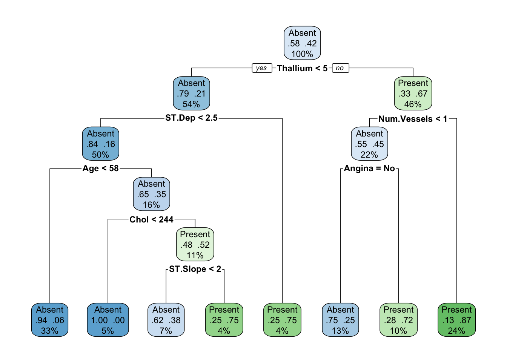
Our classification tree model shows that there are no truly dominant predictor variables, beyond perhaps Thallium (the variable for which the first split is made). This is consistent with the summary output from logistic regression, which exhibited many moderate to moderately low \(p\)-values. We also note that the predictor variables seen in the top two levels of splits also appear in the best-subset selection model.
Before continuing, we (re)define the “helper function” that takes in a vector of test-set labels and predicted Class 1 probabilities, along with the names of the two response levels, and outputs the area under curve, the optimal threshold value (the one that minimizes Youden’s \(J\) statistic), and the misclassification rate that we observe when adopting that threshold value. We will utilize this function over the remainder of this chapter to assess the performances of our different models.
suppressMessages(library(pROC))
f <- function(label, prob, factor1, factor2)
{
mod.roc <- suppressMessages(roc(label, prob))
plot(mod.roc, col="red", xlim=c(1,0), ylim=c(0,1))
cat("The AUC is", round(mod.roc$auc, 3), "\n")
J <- mod.roc$sensitivities + mod.roc$specificities - 1
t <- mod.roc$thresholds[which.max(J)]
cat("The optimal threshold value is", round(t, 3), "\n")
pred <- ifelse(prob>t, factor2, factor1)
cat("The misclassification rate is", round(mean(pred!=label), 3), "\n")
table(pred, label)
}Having done this, let’s see how the classification tree model performs:
rp.prob <- predict(rp.out, newdata=df.test, type="prob")[, 2]
f(df.test$Disease, rp.prob, "Absent", "Present")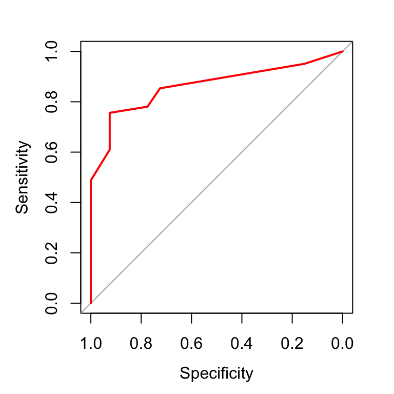
The AUC is 0.862
The optimal threshold value is 0.553
The misclassification rate is 0.16 label
pred Absent Present
Absent 37 10
Present 3 31The area under curve, or AUC, is 0.862 (versus 0.940 for logistic regression without subset selection), while the misclassification rate, or MCR, is 0.160 (versus 0.111). So while we might declare logistic regression the winner here, we should check to see if pruning will improve the classification tree.
printcp(rp.out)
Classification tree:
rpart(formula = Disease ~ ., data = df.train)
Variables actually used in tree construction:
[1] Age Angina Chol Num.Vessels ST.Dep ST.Slope
[7] Thallium
Root node error: 79/189 = 0.41799
n= 189
CP nsplit rel error xerror xstd
1 0.367089 0 1.00000 1.00000 0.085833
2 0.075949 1 0.63291 0.94937 0.085138
3 0.050633 3 0.48101 0.75949 0.081005
4 0.016878 4 0.43038 0.74684 0.080638
5 0.010000 7 0.37975 0.67089 0.078172plotcp(rp.out)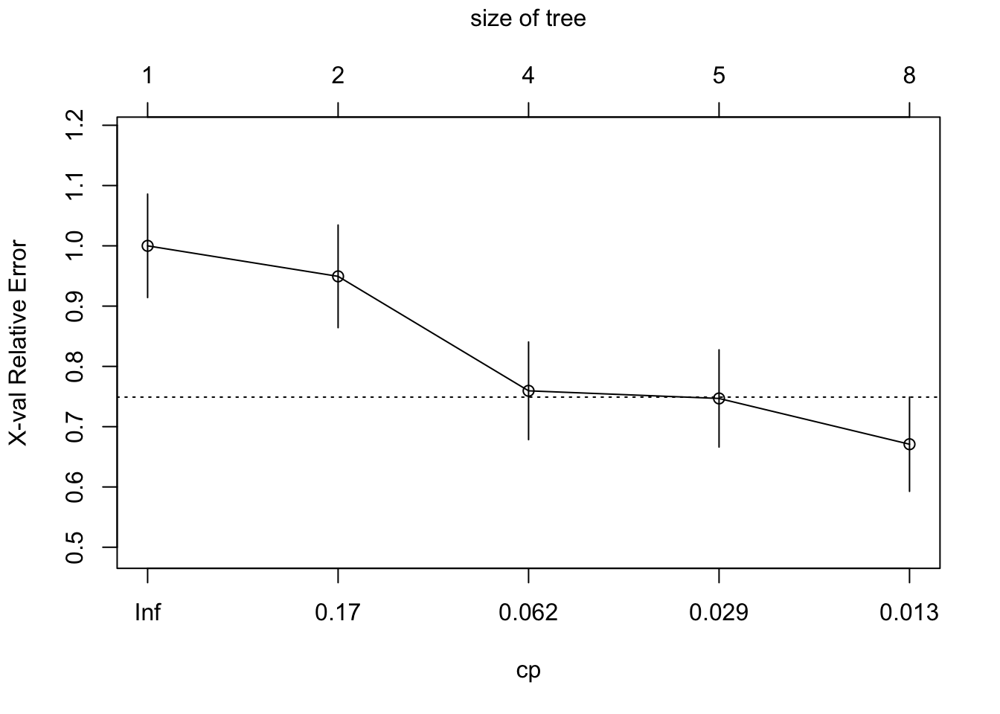
rp.pruned <- prune(rp.out, cp=0.016878)
rp.prob <- predict(rp.pruned, newdata=df.test, type="prob")[, 2]
f(df.test$Disease, rp.prob, "Absent", "Present")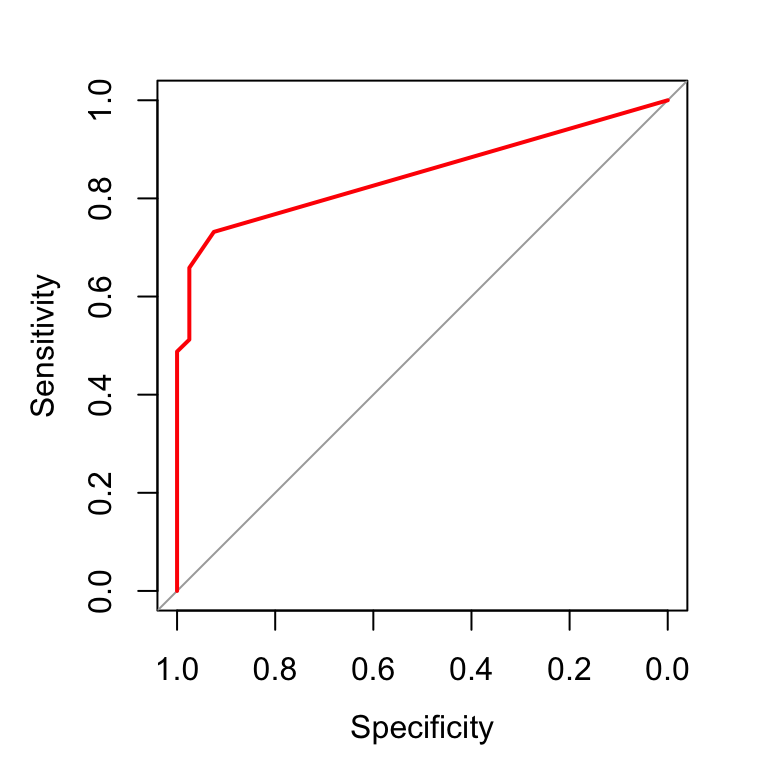
The AUC is 0.848
The optimal threshold value is 0.205
The misclassification rate is 0.173 label
pred Absent Present
Absent 37 11
Present 3 30The answer is…no.
But there is one other thing to check here. The sample size is relatively small, so perhaps we should reduce the minimum number of data that needs to be in a node before we can attempt a split:
rp.out <- rpart(Disease~., data=df.train,
control=rpart.control(minsplit=6)) # allows for two data in each terminal node
rp.prob <- predict(rp.out, newdata=df.test, type="prob")[, 2]
f(df.test$Disease, rp.prob, "Absent", "Present")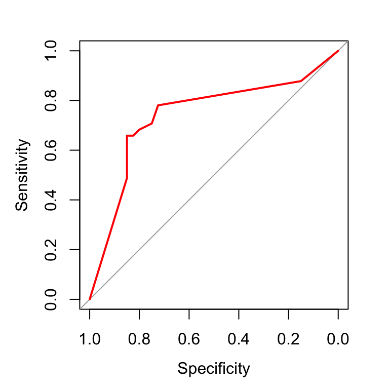
The AUC is 0.741
The optimal threshold value is 0.812
The misclassification rate is 0.247 label
pred Absent Present
Absent 34 14
Present 6 27Reducing minsplit actually made the model worse. We can thus feel confident that the logistic regression model is truly better than a classification tree model, for these data.
Decision tree models are, to an extent, interpretable and thus useful for inference, but they do have issues:
To counteract these issues, one might utilize bootstrap aggregation, or bagging. Let’s unpack the two terms “bootstrap” and “aggregation”.
The bootstrap algorithm is a clever way to “repeat” an experiment that we cannot actually repeat, and it has been shown theoretically to provide useful results.
Below we show how we would sample numbers between 1 and 10 with replacement.
set.seed(101)
sort(sample(10, 10, replace=TRUE)) [1] 1 3 3 3 6 7 9 9 9 10sort(sample(10, 10, replace=TRUE)) [1] 1 1 2 3 4 5 5 6 8 10In the first vector, the number 3 is sampled three times, as is the number 9, while 2, 4, 5, and 8 are not sampled at all. In the second vector, the numbers 1 and 5 are each sampled twice, while 7 and 9 are not sampled. If we equate these numbers with specific rows of a data frame, we can see right away how we can bootstrap data: we simply run code such as the following.
set.seed(101)
s <- sort(sample(nrow(df), nrow(df), replace=TRUE))
df.boot <- df[s, ]Note that the probability that a particular row in a data frame is represented at least once approaches \(\approx\) 63.2% as the sample size \(n\) goes to infinity. (For those curious about how one would derive this number: let \(X\) be the number of times a particular row is represented. The probability that \(X\) takes on a particular value is binomially distributed: \(X \sim\) Binom(\(n,1/n\)), where the probability of choosing the row in any one draw is \(1/n\). If we carry through the math, we would find that \(P(X > 0)\), the probability of seeing a given row represented one or more times, is \(1 - P(X=0)\), which approaches \(1 - e^{-1} = 0.632\) as \(n\) goes to infinity.)
Aggregation is important in that it reduces the variance in model predictions as well as helps us guard against overfitting.
We learn a bagging model by specifying the number of trees to grow, and then for each, constructing a deep and unpruned tree given a bootstrap sample of the training data. We accomplish model prediction by passing test-set data through every tree. For a regression model, the prediction for any one test-set datum is average of the predictions generated with each tree, whereas for a classification model with a binary response, the estimated probability that the datum belongs to Class 1 is the proportion of predicted Class 1 terminal nodes across the trees.
The random forest model is a bagging model, but with a tweak. For each bootstrapped sampled dataset, we randomly select a subset of the predictor variables, and we build the tree using only those variables. (By default, the number of predictor variables in the subset is \(m = \sqrt{p}\); when we set \(m = p\), we recover the bagging algorithm.) Selecting a subset of the predictor variables for each tree allows us to mitigate the issue that if there is a dominant predictor variable, the first split is (almost always) going to be made along that variable’s axis.
In general, learning a random forest model leads to improved prediction accuracy relative to a decision tree model, but at the expense of interpretability. One can easily plot and interpret a single tree, but if you have, say, 500 trees, what can one do? We fall back on the concept of variable importance, which is a metric that represents the average degradation in the mean-squared error or the classification accuracy that occurs if we were to randomly permute the data associated with a given variable. The greater the degradation, the more important the variable must be for generating accurate predictions for the response variable.
Here we learn a random forest model for the same stellar temperature data that we use above to learn a regression tree.
suppressMessages(library(randomForest))
set.seed(101)
rf.out <- randomForest(Teff~., data=df.train, importance=TRUE)
rf.out
Call:
randomForest(formula = Teff ~ ., data = df.train, importance = TRUE)
Type of random forest: regression
Number of trees: 500
No. of variables tried at each split: 3
Mean of squared residuals: 310418.6
% Var explained: 47.38rf.pred <- predict(rf.out, newdata=df.test)
round(sqrt(mean((rf.pred-df.test$Teff)^2)), 3)[1] 522.618In the output, we see an estimate of \(R^2\) (the % Var explained, here 0.474) and the mean-squared error (the Mean of squared residuals), using those data in the training set that were not included in a given tree. This is the OOB, or out-of-bag error estimate, and the square root of its value is 557. (Again, as was the case with the regression tree, if we have split the data we would focus on the test-set root MSE, because this allows for an apples-to-apples comparison of the quality of different models.)
The test-set RMSE value, 523, is substantially lower than that associated with the regression tree model, but also substantially higher than that associated with the multiple linear regression model. This is a clear indication that segmenting the predictor space into hyperrectangles does not lead to a better representation of the data-generating process than just drawing a hyperplane through that space.
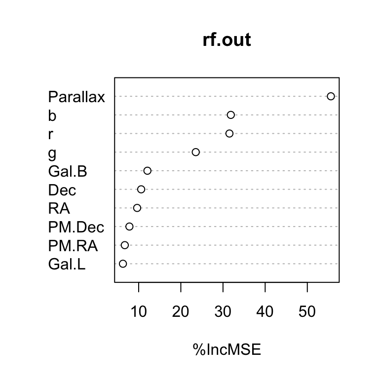
To generate a variable importance plot, we need to first include the argument importance=TRUE in the call to randomForest(). Having done that, we call the function varImpPlot(), and add the argument type=1 to limit the output to one plot showing the percentage increase in the OOB-estimated mean-squared error for each (permuted) predictor variable. The plot above indicates that the Parallax, b, and r variables are the primary ones driving predictions of stellar temperatures (along with g); this is largely consistent with our visual interpretation of the regression tree. It is important to note the \(x\)-axis limits: the lower limit on %IncMSE is not zero! This plotting feature can often affect initial, visually driven interpretations of variable importance.
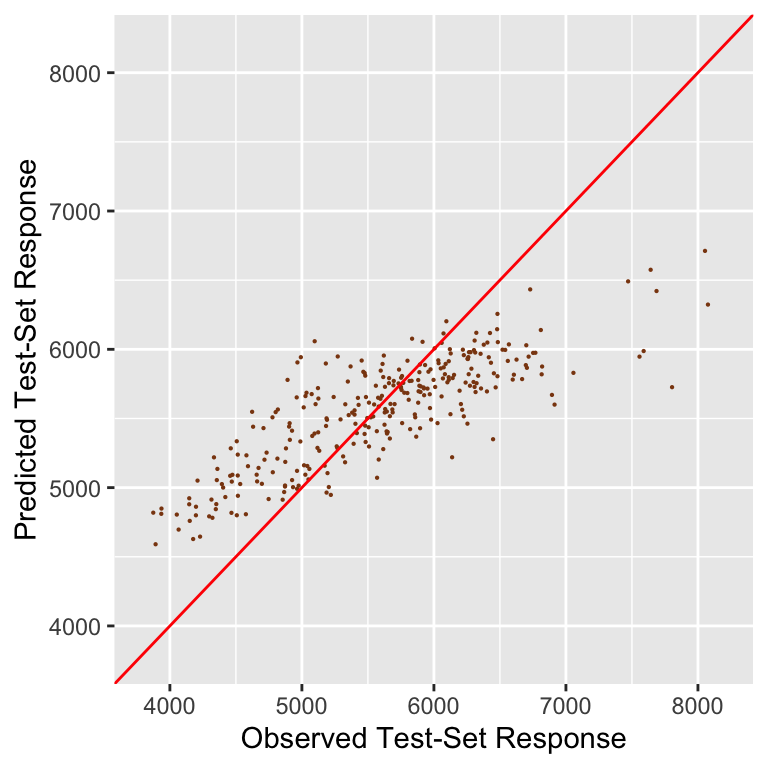
In the diagnostic plot above, we observe less scatter about the diagonal line than we do for the regression tree model, which is reflected in the lower RMSE value for the random forest model. However, we can see clearly that the model does not perform well for the smallest and largest observed response values; for these values, the multiple linear regression model performs much better.
Here we learn a random forest model for the same heart disease data that we use above to learn a classification tree.
set.seed(101)
rf.out <- randomForest(Disease~., data=df.train, importance=TRUE)
varImpPlot(rf.out, type=1)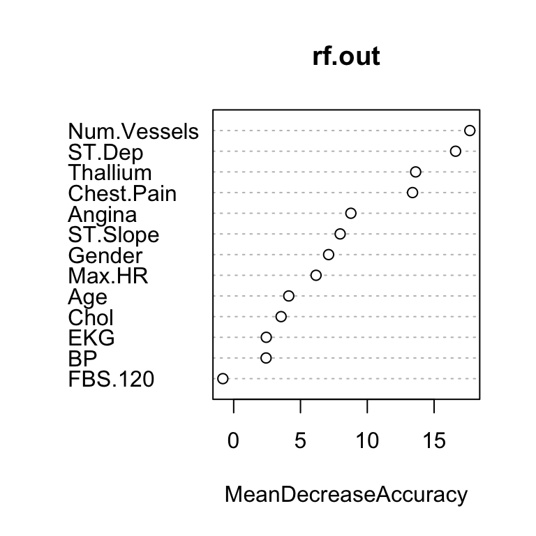
rf.prob <- predict(rf.out, newdata=df.test, type="prob")[, 2]
f(df.test$Disease, rf.prob, "Absent", "Present")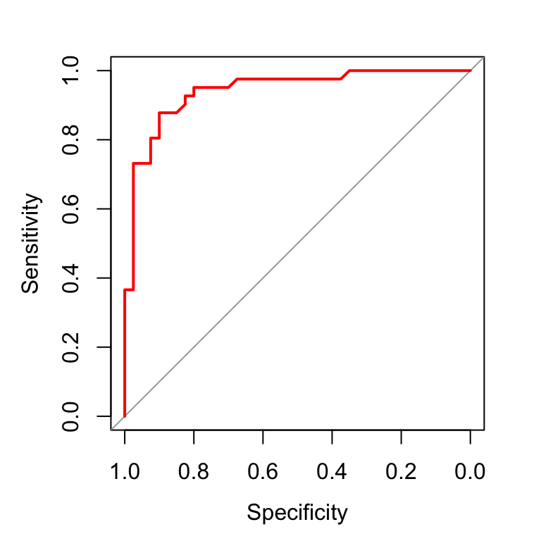
The AUC is 0.942
The optimal threshold value is 0.323
The misclassification rate is 0.111 label
pred Absent Present
Absent 36 5
Present 4 36The variable importance plot (which shows the mean decrease in accuracy) indicates that the predictors seen near the top of the classification tree are the most important predictors as determined by random forest, but it also indicates that many of the predictors are potentially associated with the response. The AUC and MCR values are almost exactly those observed for logistic regression; if we are to choose between those two models, we would adopt the logistic regression model, which allows for more precise inference without sacrificing predictive performance.
The core idea of boosting is that it slowly learns a model by fitting the model residuals from the previous fit. Each iteration of boosting attempts to hone in on those data that were not well fit previously, i.e., those data for which the residual values \(r_i = Y_i - \hat{Y}_i\) continue to be large. However, rather than work with the \(r_i\)’s directly, the algorithm works with the shrunken values \(\lambda r_i\), where \(\lambda < 1\) (typically 0.3). In contrast to bagging, which involves growing many deep trees that are then aggregated, boosting grows one tree; the smaller the value of \(\lambda\), the more slowly and conservatively the boosted tree is grown. One can thus think of boosting as akin to the art of bonsai, in which one lavishes much attention on a single tree that is carefully grown. We find that in typical analyses, random forest and boosting models achieve similar results; one rule of thumb is that boosting (specifically, extreme-gradient boosting) generally produces better models as sample sizes get larger and larger. (But this is by no means an absolute result!)


We apply extreme gradient boosting, or xgboost, to our stellar temperature data. Note the function calls that are displayed below look “weird” because the xgboost package developers have yet, at the time of writing, to adapt to general R modeling function syntax. We also note that xgboost currently works only with quantitative predictor variables, meaning that any factor variables need to be transformed to have numeric values. (For instance, no and yes can be changed to 0 and 1, while nominal factor variables can be dealt with through the use of one-hot encoding: e.g., make no a column with value one where the datum is no and 0 otherwise, and make yes another, similar column. The use of one-hot encoding makes the most sense when there are three or more categories associated with a predictor variable.)
suppressMessages(library(xgboost))Warning: package 'xgboost' was built under R version 4.5.2set.seed(101)
names(df) [1] "Teff" "RA" "Dec" "Parallax" "PM.RA" "PM.Dec"
[7] "g" "b" "r" "Gal.L" "Gal.B" pcol <- 2:11 # columns with predictor variables
rcol <- 1 # column with response variable
xg.train <- xgb.DMatrix(data=as.matrix(df.train[, pcol]), label=df.train[, rcol])
xgb.cv.out <- xgb.cv(params=list(objective="reg:squarederror"), data=xg.train, nrounds=100, nfold=5, verbose=0)
nround <- xgb.cv.out$evaluation_log$iter[which.min(xgb.cv.out$evaluation_log$test_rmse_mean)]
xgb.out <- xgboost(x=df.train[, pcol], y=df.train[, rcol], objective="reg:squarederror", nrounds=nround)
xgb.pred <- predict(xgb.out, newdata=as.matrix(df.test[, pcol]))
round(sqrt(mean((xgb.pred-df.test[, rcol])^2)), 3)[1] 433.243imp.out <- xgb.importance(model=xgb.out)
xgb.plot.importance(importance_matrix=imp.out,col="blue")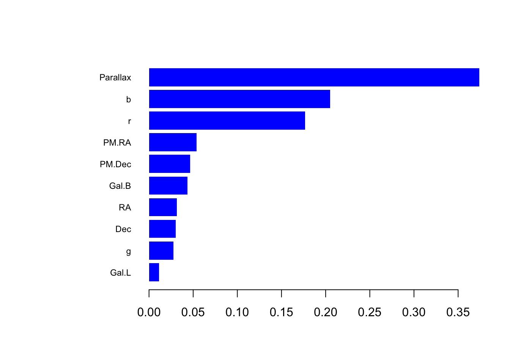
Like random forest, xgboost generates a measure of variable importance dubbed the gain, which is the “fractional contribution of each feature to the model based on the total gain of this feature’s splits. Higher percentage means a more important predictive feature.” Here, we see that Parallax, b, and r are substantially more important variables than the others for generating accurate predictions of stellar temperatures, which is a result consistent with that seen for the regression tree.
The test-set RMSE for the xgboost model is 433, which is over 7% lower than the value for the multiple linear regression model. Whether this is sufficient for one to adopt the xgboost model instead of the more inferential linear regression model is a question that we cannot answer: one must determine how important inference is as a research goal and make one’s own decision.
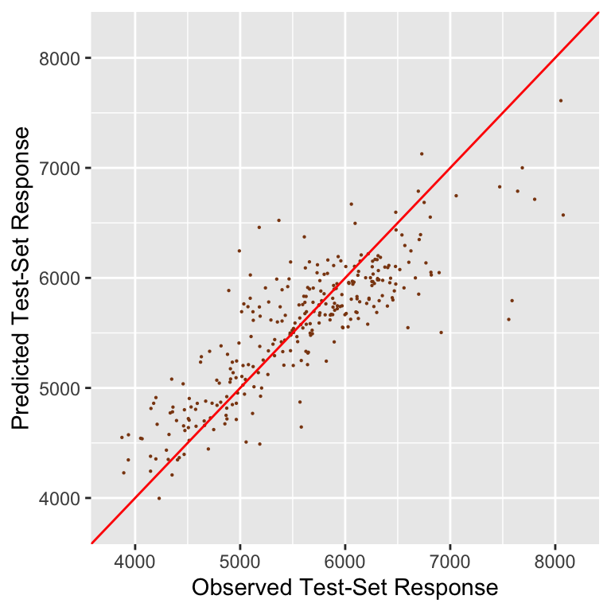
If we compare the diagnostic plot above directly against that for the random forest model, we observe similar levels of scatter about the diagonal line but also that the predictions are that much more accurate for the smallest and largest observed response values, hence the overall lower RMSE value.
Here we will once again work with the heart-disease dataset. However, given that some of the variables are categorical, we have to carry out some transformations: we transform the binary variable Gender to have values 0 (male) and 1 (female), the binary variables Angina and FBS.120 to have values 0 (no) and 1 (yes), and the binary respose variable Disease to have values 0 and 1 (for “Absent” and “Present”). The last change means that the final confusion matrix will be in terms of 0 and 1.
suppressMessages(library(xgboost))
names(df) [1] "Age" "BP" "Chol" "Max.HR" "ST.Dep"
[6] "ST.Slope" "Num.Vessels" "Thallium" "Chest.Pain" "EKG"
[11] "Gender" "Angina" "FBS.120" "Disease" set.seed(101)
pcol <- 1:13 # columns with predictor variables
rcol <- 14 # column with response variable
xg.train <- xgb.DMatrix(data=as.matrix(df.train[, pcol]), label=df.train[, rcol])
xgb.cv.out <- xgb.cv(params=list(objective="binary:logistic", eval_metric="error"), data=xg.train, verbose=0, nrounds=100, nfold=5)
nround <- xgb.cv.out$evaluation_log$iter[which.min(xgb.cv.out$evaluation_log$test_error_mean)]
xgb.out <- xgboost(x=as.matrix(df.train[, pcol]), y=factor(df.train[, rcol]), objective="binary:logistic", nrounds=nround, eval_metric="error")
xgb.pred <- predict(xgb.out, newdata=as.matrix(df.test[, pcol]))
f(factor(df.test$Disease), xgb.pred, "0", "1")The AUC is 0.912
The optimal threshold value is 0.233
The misclassification rate is 0.123 label
pred 0 1
0 35 5
1 5 36We find that while the xgboost model is competitive with both the logistic regression and random forest models, it doesn’t quite do as well: the AUC is 0.912 (as opposed to 0.942) and the MCR is 0.123 (as opposed to 0.111). For these particular data, we would not adopt the xgboost model.
In words: the K-nearest neighbors (or KNN) algorithm examines the \(k\) data points closest to a given location \(x\) and uses just those data to generate predictions. KNN is not really a machine-learning model, despite being discussed in this chapter: it straddles the boundary between fully parameterized models like linear regression and fully data-driven models like random forest, because while the KNN model is data-driven, one can write down a compact parametric form for it a priori:
for regression: \[ {\hat Y} \vert \mathbf{x} = \frac{1}{k} \sum_{i=1}^k Y_i \]
and for classification: \[ P[Y = j \vert \mathbf{x}] = \frac{1}{k} \sum_{i=1}^k \mathbb{I}(Y_i = j) \]
The summations are over the \(k\) points \(\mathbf{x}_1,\ldots,\mathbf{x}_k\) that are the “closest” to \(\mathbf{x}\) (usually in a Euclidean sense), while \(\mathbb{I}(\cdot)\) is the indicator function: it returns 0 if the argument is false, and 1 otherwise.
As a general rule, models like linear regression will outperform a model like KNN when there are only a small number of observations per predictor. This is because of the curse of dimensionality: for data-driven models, the amount of data we would need to get similar model performance goes up exponentially with \(p\), the number of predictor variables. Thus a KNN model might not be the optimal model to learn when the number of predictor variables is large. Also, we cannot derive any inferences from a KNN model: it is a black box.
Note that for KNN, the number of neighbors \(k\) is a tuning parameter. If we make \(k\) too small, the resulting model will be too flexible: it will exhibit low bias (it will be right on average) but high variance (the predictions will be more uncertain). On the other hand, if we make \(k\) too large, the resulting model will be not flexible enough: it will exhibit high bias (it will be wrong on average) but low variance (it will generate nearly the same predictions, every time). To determine the optimum value of \(k\), we need split the training set itself into a smaller training set and a validation set. For each value of \(k\), we train on the smaller training set, and compute the mean-squared error or the misclassification rate using the validation set. Then, once the optimum value of \(k\) is determined, we re-run the model using the entire (unsplit) set of training data, and assess the model using the test-set data. However, we do not need to actually do this if we use, e.g., the FNN package in R; its functions perform cross-validation within the training set automatically, greatly reducing the amount of code we need to write to learn a KNN model.
To determine which neighbors are the nearest neighbors, pairwise (Euclidean) distances are computed…so we should scale (or standardize) the individual predictor variables. Also, since it utilizes computed distances between data, KNN only works with quantitative predictor variables. (If we have categorical predictors, we can simply map them to numbers like we did when we worked with the xgboost model above. However, when we do this, we are sweeping under the rug the fact that the numbers are ad hoc and thus somewhat meaningless in Euclidean distance calculations…other distance metrics might be more useful, but they are beyond the scope of the book). Last, we note that one should never blindly compute a pairwise distance matrix…for instance, if \(n\) = 100,000, then the pairwise distance matrix will have \(10^{10}\) elements, each of which uses 8 bytes in memory…resulting in a memory usage of 80 GB! The alternatives are to subsample the data, limiting \(n\) to be \(\lesssim\) 15,000-20,000, or to use a variant of KNN that works with sparse matrices (matrices that can be compressed since most values are zero), or to make use of a “kd tree” to more effectively (but only approximately) identify nearest neighbors, or to find a computer with 32 GB or 64 GB (or more) of memory. The FNN package in R has an option to search for neighbors via the use of a kd tree; one should apply this option if there are more than, e.g., 10,000 rows in the data frame.
Here we learn a KNN model given our stellar temperature data. Note that we scale each of the predictor variables, i.e., we enact the following transformation for the \(j^{\rm th}\) datum of the \(i^{\rm th}\) predictor: \[ X_{ij} ~~~ \rightarrow ~~~ \frac{X_{ij} - \overline{X_i}}{s_i} \,, \] where \(\overline{X_i}\) is the sample mean for the \(i^{\rm th}\) predictor variable, and \(s_i\) is the sample standard deviation.
library(FNN)
k.max <- 100
mse.k <- rep(NA,k.max)
for ( kk in 1:k.max ) {
knn.out <- knn.reg(train=df.train[,2:11],y=df.train[,1],k=kk,algorithm="brute")
mse.k[kk] <- mean((knn.out$pred-df.train[,1])^2)
}
k.min <- which.min(mse.k)
cat("The optimal number of nearest neighbors is ",k.min,"\n")The optimal number of nearest neighbors is 8 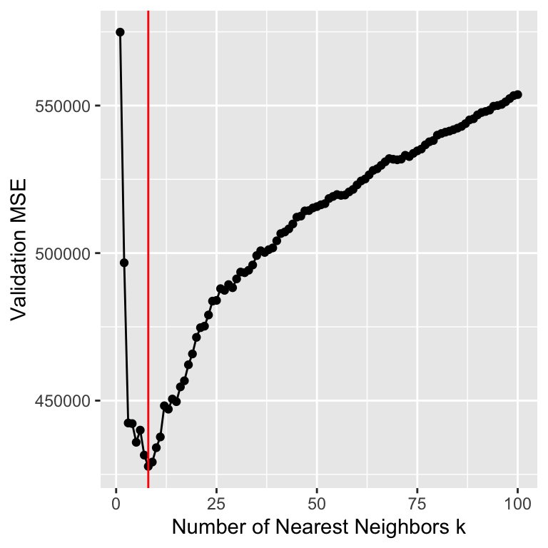
We find that the optimal number of neighbors is 8. Note that in any given analysis, if the optimal number is equal to k.max, then the value of k.max is too small: increase its value and start over!
knn.out <- knn.reg(train=df.train[, 2:11], # the predictors are in cols 2-11
test=df.test[, 2:11],
y=df.train[, 1],
k=k.min, algorithm="brute")
round(sqrt(mean((knn.out$pred-df.test[, 1])^2)))[1] 630The test-set RMSE is 630, which is much higher than that observed for the xgboost and multiple linear regression models. (This is indicative of the curse of dimensionality: here we have “only” 1000 data compared to 10 predictor variables.) We would not adopt this model to explain the data-generating process for stellar temperatures.
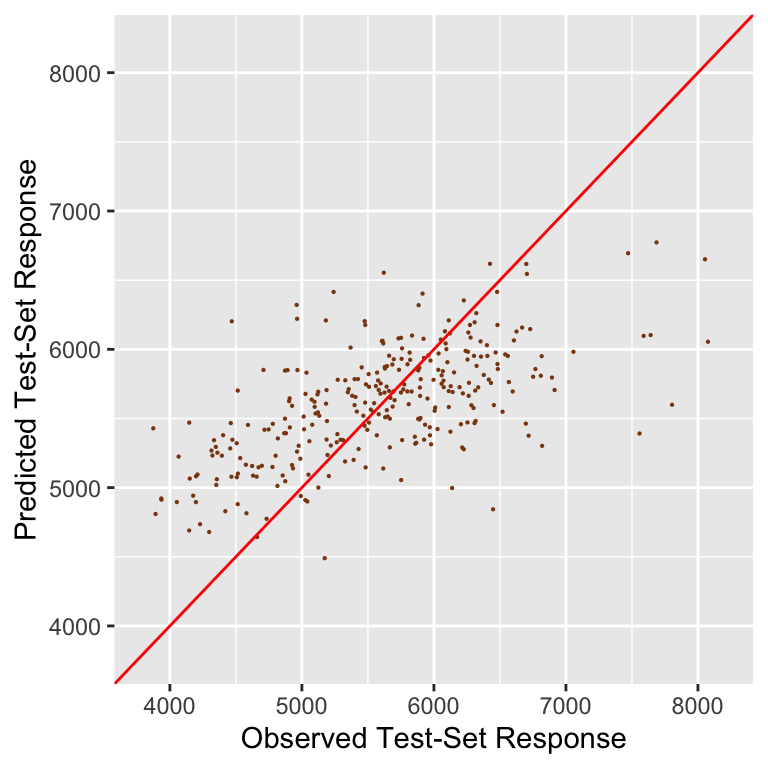
The diagnostic plot shows substantial scatter about the diagonal line (like the regression tree model), with the model being inaccurate for both small and large values of the response.
We once again return to the heart disease dataset. As we do when learning an xgboost model, we transform the binary variable Gender to have values 0 (male) and 1 (female), and the binary variables Angina and FBS.120 to have values 0 (no) and 1 (yes). However, unlike before, the binary response variable Disease does not need to be transformed: the FNN package handles categorical responses seamlessly. (And here, we scale the predictor variable values.)
k.max <- 100
mcr.k <- rep(NA, k.max)
for ( kk in 1:k.max ) {
knn.out <- knn.cv(train=df.train[,-11], cl=df.train[,11],k=kk, algorithm="brute")
mcr.k[kk] <- mean(knn.out!=df.train$Disease)
}
k.min <- which.min(mcr.k)
cat("The optimal number of nearest neighbors is ",k.min,"\n")The optimal number of nearest neighbors is 29 The optimum number of neighbors is 29.
knn.out <- knn(train=df.train[, -11],
test=df.test[, -11],
cl=df.train[, 11],
k=k.min, algorithm="brute", prob=TRUE)
knn.prob <- attributes(knn.out)$prob
w <- which(knn.out=="Absent")
knn.prob[w] <- 1 - knn.prob[w]
f(df.test$Disease, knn.prob, "Absent", "Present")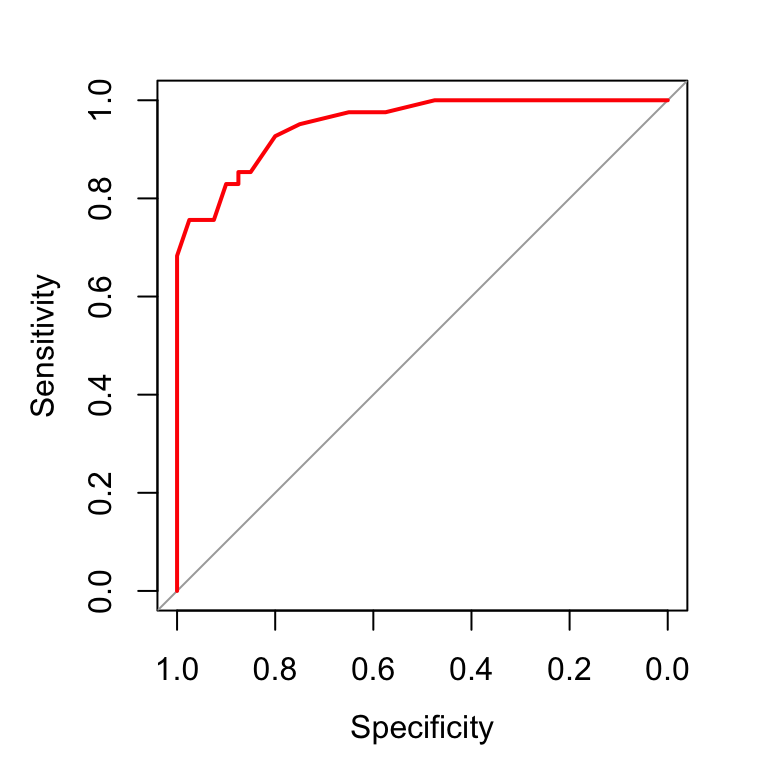
The AUC is 0.952
The optimal threshold value is 0.466
The misclassification rate is 0.136 label
pred Absent Present
Absent 39 10
Present 1 31Surprisingly, while we would expect the curse of dimensionality to arise here given the small sample size, we find that the KNN model has the best AUC value of all (0.952 vs. 0.942). However, the MCR associated with the optimal threshold value is higher than that for both logistic regression and random forest (0.136 vs. 0.111), and so, given the choice, we would still lean towards the adoption of the (inferential) logistic regression model.
The Naive Bayes classifier is a simple probabilistic classifier that is a popular baseline model for text classification, particularly spam detection. Why it is called “naive” and “Bayes” will become more clear below.
(Before we continue, though, we do need to state that despite its being customarily lumped in with other machine learning models, Naive Bayes is not really an ML model, because its mathematical form can be completely written down a priori: learning the model only involves estimating coefficients.)
Naive Bayes is a conditional probability model: given a vector of predictor variable values \(\mathbf{x}\), the algorithm assigns conditional probabilities for each of the response variable’s \(K\) classes: \[ p(C_k \vert x) \] (Note that while our description will general in the sense that \(K\) can take on any value greater than one, we will continue to assume \(K=2\) in the examples below.) The conventional decision rule is the so-called MAP, or maximum a posteriori rule: pick the class that is most probable.
But: how does one estimate \(p(C_k \vert x)\)?
The first step is to apply Bayes’ rule from probability theory (hence, the “Bayes”): \[ p(C_k \vert \mathbf{x}) = \frac{p(C_k)p(\mathbf{x} \vert C_k)}{p(\mathbf{x})} ~~~ \rightarrow ~~~ p(C_k)p(\mathbf{x} \vert C_k) \,. \] (We can ignore the denominator above, which is a constant in any given analysis.) The next step is to expand \(p(\mathbf{x) \vert C_k)\): \[\begin{align*} p(\mathbf{x} \vert C_k) &= p(x_1,\ldots,x_p \vert C_k) \\ &= p(x_1 \vert x_2,\ldots,x_p,C_k) p(x_2 \vert x_3,\ldots,x_p,C_k) \cdots p(x_p \vert C_k) \,. \end{align*}\] The third step is where the “naive” aspect of the classifier comes into play. We assume (perhaps correctly, but probably incorrectly) that the predictor variables are all mutually independent, i.e., that \[\begin{align*} &p(x_1 \vert x_2,\ldots,x_p,C_k) p(x_2 \vert x_3,\ldots,x_p,C_k) \cdots p(x_p \vert C_k) \\ \rightarrow ~~~ &p(x_1 \vert C_k) p(x_2 \vert C_k) \cdots p(x_p \vert C_k) \,. \end{align*}\] So in the end, we can write that \[ p(C_k \vert \mathbf{x}) \propto p(C_k) \prod_{i=1}^p p(x_i \vert C_k) \,, \] where “\(\propto\)” means “is proportional to” and where \(\prod\) is the product symbol.
To utilize Naive Bayes, one needs to assign “prior probabilities,” \(p(C_k)\), for each class, and one needs to assume conditional distributions for each class. Common choices for \(p(C_k)\) are \(1/K\) (equal probabilities for each class) and \(n_k/n\) (the number of training data in class \(k\) divided by the training set sample size). As for \(p(x_i \vert C_k)\):
if \(x_i\) is a quantitative variable, one often assumes that \(p(x_i \vert C_k)\) is a normal distribution, with mean and variance given by the sample mean and sample variance of the training data in class \(k\)
if \(x_i\) is a categorial variable, one often assumes that \(p(x_i \vert C_k)\) is a binomial distribution (if there are two categories) or a multinomial distribution (if there are more than two categories), with the relative proportions of each category informing the category probability estimate.
In the end: why should we use the Naive Bayes model?
And…why should we not use the Naive Bayes model?
Given its speed and ease of implementation, it never hurts to try the Naive Bayes model out. Do not expect it to win the misclassification error battle…but we can be happy if it does!
Here we learn a Naive Bayes model for the heart disease data.
suppressMessages(library(e1071))
nb.out <- naiveBayes(Disease~., data=df.train)
nb.out
Naive Bayes Classifier for Discrete Predictors
Call:
naiveBayes.default(x = X, y = Y, laplace = laplace)
A-priori probabilities:
Y
Absent Present
0.5820106 0.4179894
Conditional probabilities:
Age
Y [,1] [,2]
Absent 52.65455 9.194570
Present 57.40506 7.636819
BP
Y [,1] [,2]
Absent 129.3909 17.03698
Present 136.9873 19.40493
Chol
Y [,1] [,2]
Absent 243.6364 58.08642
Present 260.5570 49.69232
Max.HR
Y [,1] [,2]
Absent 157.4818 19.41565
Present 140.7089 20.96771
ST.Dep
Y [,1] [,2]
Absent 0.6490909 0.7984785
Present 1.7240506 1.3983704
ST.Slope
Y [,1] [,2]
Absent 1.400000 0.6088039
Present 1.886076 0.5544076
Num.Vessels
Y [,1] [,2]
Absent 0.2636364 0.6159541
Present 1.1265823 1.0422742
Thallium
Y [,1] [,2]
Absent 4.000000 1.691859
Present 5.873418 1.756797
Gender
Y Female Male
Absent 0.3909091 0.6090909
Present 0.2025316 0.7974684
Angina
Y No Yes
Absent 0.8454545 0.1545455
Present 0.4556962 0.5443038
Chest.Pain
Y [,1] [,2]
Absent 2.800000 0.9654585
Present 3.544304 0.8593001
FBS.120
Y No Yes
Absent 0.8272727 0.1727273
Present 0.8354430 0.1645570
EKG
Y [,1] [,2]
Absent 0.8454545 0.9878748
Present 1.2025316 0.9790072The “A-priori probabilities” show that 58.2% and 41.8% of the training data are comprised of people for whom heart disease is absent and present, respectively.
The rest of the output shows the parameters of the normal distributions that are used to model the quantitative predictors, as well as conditional probabilities for the categorical predictors. For instance, regarding Age, it is inferred that those without heart disease have ages that are distributed according to a normal distribution with mean 52.7 and standard deviation 9.19, with the corresponding numbers for those with heart disease being 57.4 and 7.64. (Thus those with heart disease are inferred to be older, which makes sense). Then, for Gender, the training data are telling us that the probability of being female when heart disease is absent is 0.391; the corresponding figure when it is present is 0.203. (Thus, if a test datum has gender Female, we are less likely to predict an outcome of Present.)
nb.prob <- predict(nb.out, newdata=df.test, type="raw")[, 2]
f(df.test$Disease, nb.prob, "Absent", "Present")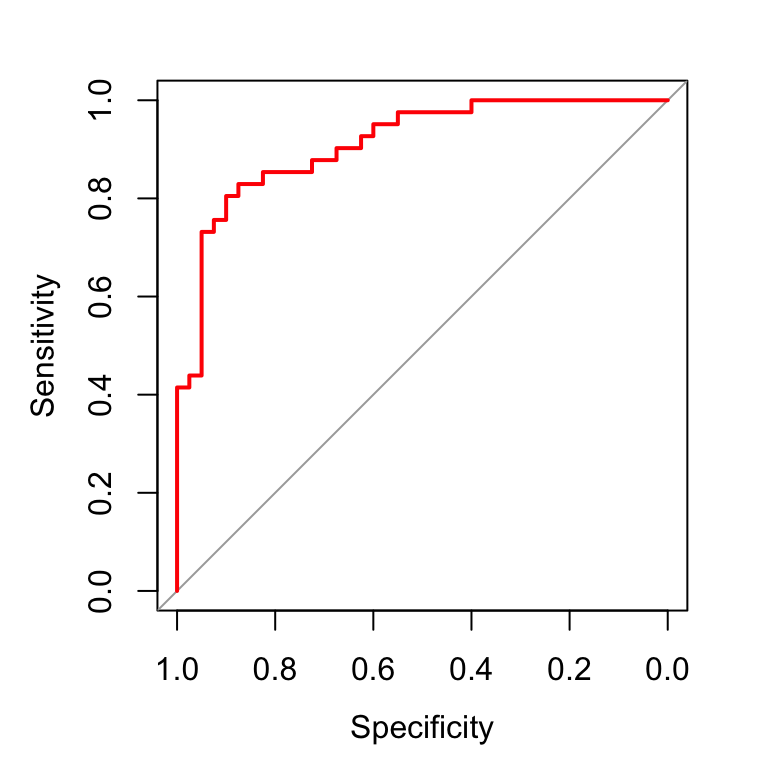
The AUC is 0.912
The optimal threshold value is 0.222
The misclassification rate is 0.148 label
pred Absent Present
Absent 36 8
Present 4 33Very briefly, the support vector machine model is one that in theory transforms observed predictor data to a higher dimensional space in which a separating hyperplane is defined: we predict one class to one side of the plane, and the other to the other. In practice, no actual transformation takes place, as the algorithm makes use of the so-called kernel trick to emulate the transformation. Even so, SVM models are slow to learn: the algorithm is \(O(n^3)\), meaning it takes (roughly) \(10^3 = 1000\) times longer to learn an SVM model given a 10,000-row data frame instead of a 1,000-row data frame. They can also be tricky to tune. The SVM model can deliver value in a binary classification setting if one has a small (\(n \lesssim\) 1000) dataset and the willingness to take the time to tune its parameters, due to its ability to adapt to data geometries that, e.g., random forest might not easily adapt to, but we will leave its use to the discretion of the interested reader. For more information, one should always start with the chapter on SVM in James et al. (2021).
| model | rmse |
|---|---|
| Linear Regression | 467 |
| Pruned Tree | 673 |
| Random Forest | 523 |
| XG Boost | 433 |
| KNN | 630 |
| model | auc | threshold | mcr |
|---|---|---|---|
| Logistic Regression | 0.940 | 0.370 | 0.111 |
| Classification Tree | 0.862 | 0.553 | 0.160 |
| Random Forest | 0.942 | 0.323 | 0.111 |
| XG Boost | 0.912 | 0.233 | 0.123 |
| KNN | 0.952 | 0.466 | 0.136 |
| Naive Bayes | 0.912 | 0.222 | 0.148 |